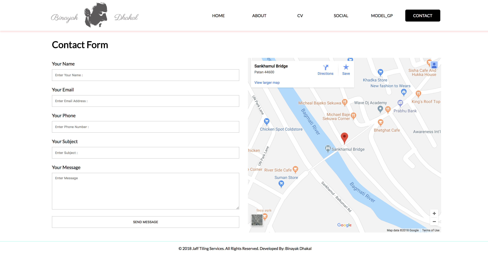

This report is all about designing a cv website using html5 and css2/3. By implementing material design I have design a very simple webpage. As mentioned in the task I have created total six pages they are home page(index.html), about page(about.html), cvpage(cv.html), social page (social.html), modal_gp page (modal_gp.html) and finally contact page (contact.html).
To design I followed the simple steps of designing website. First of all, I did work on some wireframes for the basic layout of the website. And mock up design to see how my final website would look like. It was not a simple task to do those things, so I needed to research a lot about those things first and then I watched some videos in YouTube how to design wireframe and how to convert the wireframe into mock ups and finally I came up with these results.
In all the pages common section of my website were header part and footer part. There are two header designs in my cv website for home page and other common page.
In about page the common section of header and footer is repeated I have just used two sections of div where the left one is for my picture and another one is for the about content of the page.
In cv page common section of header and footer is again repeated and then there is also two sections like in about page one containing the one image and another for listing my detail about myself.
In modal_gp page there is not header and footer section it is just the page of writing the report of this assignment so it's just like pdf page layout.
In contact page common section is again repeated but have two differe section one is for form and another is for google map.
After being clear about the layouts of my cv website I did so photo shop to create the mock up design so my website. I just use black and white color in my website to make it simple and clean and font that I have use in 'Lato', san-serif. I used some icon from flat icons website and did some modification to use it on my website. And the result for my mockups are as below. After the layout was final then I did some work on findings the proper icons for the homepage and separated five sections and to insert those icons I modified them a little to make it look more familiar to my website. In about page and CV page i have made the image border rounded and used some box shadows to make it more attractive for the visitor to see my website. And when hovering them it will be litter bit bigger and shawdow will be lighter looking like coming near towards us. In social page I have used designs style like square shape and plus rotating them making it look unique and when they are hovered background of the icons will change the color to their originals color and the shape of the icon will be rounded totally. In modal_gp page there is only the simple style like as of pdf files and the images of the screen are placed according to their names and deign in wireframe. In contact page there is no adding changes just has the wireframe layout and same design for the text. After finishing my wireframes and mock up I was now clear about what I am developing using html and css3 properties. After studying the course module I was clear about how to create pages and how to link them together so designing a very simple layout but to make it attractive from html and css I had to learn more css properties so I visited to w3shools which was more than enough for me so I didn't have to struggle more in that.
To develop the home page I first of all create index.html page and started make header, main section and footer secton. But the layout I made was litte bit confusing at first for me because the section which needs to be repeat where have 100% with in the screen but the rest content where less than 100% so I just created some classes like "class="fixwidth" having 80% width and I made other divs 100% with and by applying the css property I was able to make the website same like it was looking on the mock ups design earlier. And for the 5 section of linked lcon I have use div naming "child-div" and used the display propertyAnd finishing the home page I validated my home page with the w3 validator online and the screen shot the that validation is down below.
In about page it was second challenge for me because the header of this page and rest page were different so I got litter stuck in it. But after researching for half an hour I thought to use to inline css in home page to make my logo in the center and comment the whole navigation list and finally the result that I was looking for was done for about page. And for the two section i have used display property. And the validation of the page in down below.
For CV page I have used the same two section but with the listing tag in right div to make it the cv format. No more extra part in done in cv page. And the validation for this page is down below:
In social page I have used the unordered list tag and anchor tag for link to social page and I also have found the attribute target="_blank" for anchor tag to open the link on the next page. Not in the same webpage. And the validation for this page is down below:
In modal_gp page I have used heading, paragraph tag and image tags to show it simple. And the validation in for this page is down below.
In contact page I have used the form property and iframe property provided by Google Itself to locate my location. And it was done by doing some more research in internets. And the validation in for this page is down below.
In home page I have used class like fixwidth with the property of 80% width and margin:0 auto to centralize itself. In the five separated div I have use display:flex property and justify content property to make it appear like that
In about page I have implemented the display:flex property for the logo, navigation and for 2 section that have been divided for image and content.
In social page also I have used the display: flex property to display the items in the same line and I have used transform: rotate property as well to have in that way
In contact page I have used display: flex property for separating the div and I have used padding, margins border to make my form simple and detailed.
After completing this whole html and css web-development project I have got knowledge of proper website designing tools. After writing the html markup myself I am being able to find write my mark and css to make I fast and very much understandable. I have used google fonts and font-awesome icons for my website. Font awesome was easier for me to implement in my website rather than using icons images. After watch the video on YouTube about modern web design tool I got to know about font awesome website and after visiting there I found that I can use the fonts like in google so I found the CDN(Content delivery network) code and link it in the head section of html for social page.I have implemented some javascript as well for the navigation bar in responsive view. I researched about java from w3 school as well. I have shown the difference of the code for pages by commenting the not needed code for the specific page.
For Home page about icon: Flaticon. 2018. Hand gesture - Free nature icons. [ONLINE] Available at: https://www.flaticon.com/free-icon/hand-gesture_268179#term=about&page=1&position=25 . [Accessed 05 April 2018].
For Home page cv icon: Flaticon. 2018. CV - Free education icons. [ONLINE] Available at: shttps://www.flaticon.com/free-icon/cv_718089#term=cv&page=1&position=21. [Accessed 05 April 2018].
For Home page social icon: Flaticon. 2018. Social media campaign - Free social icons. [ONLINE] Available at: https://www.flaticon.com/free-icon/social-media-campaign_48726#term=social%20connection&page=1&position=8s [Accessed 05 April 2018].
For Home page modal gp icon: Flaticon. 2018. Laptop - Free business icons. [ONLINE] Available at: https://www.flaticon.com/free-icon/laptop_235265#term=laptop&page=1&position=24. [Accessed 05 April 2018].
For Home page modal gp icon: Flaticon. 2018. Contacts - Free communications icons. [ONLINE] Available at: https://www.flaticon.com/free-icon/contacts_176668#term=phone%20book&page=1&position=9 . [Accessed 05 April 2018].
For the code reference I visited w3 schools W3Schools Online Web Tutorials. 2018. W3Schools Online Web Tutorials. [ONLINE] Available at: https://www.w3schools.com/ . [Accessed 05 April 2018].